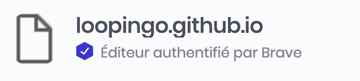

New navigator Brave offer a new model with a reward system for content creators.
You can download and learn more about here.
As a github user and a big fan of Brave, how github creators can be easily
rewarded by users?
Follow me
Github Pages allow to anyone to create a repository hosted on github for free.
Create you own github pages here
This is ok?
you can acces and check
https://{USER}.github.com is a beautiful blank page.
Go to Brave publisher
You are now logged and on the dashboard page.
Brave support currently multiple channels as classic domain name, twitch channel and youtube channel.
Enter you github domain name '{USER}.github.com' and click Download a trusted file.
First create a directory called '.well-know' in the root of github pages directory.
Put the verification file in '.well-know' folder.
Do not change the verification file name 'brave-payments-verification.txt' or the file content.
Verification can take one or two days, so be patient.
As you account is verified, a new 'verified' logo appear on you brave page status.
Love this tutorial? You can tip me with brave on this page :)